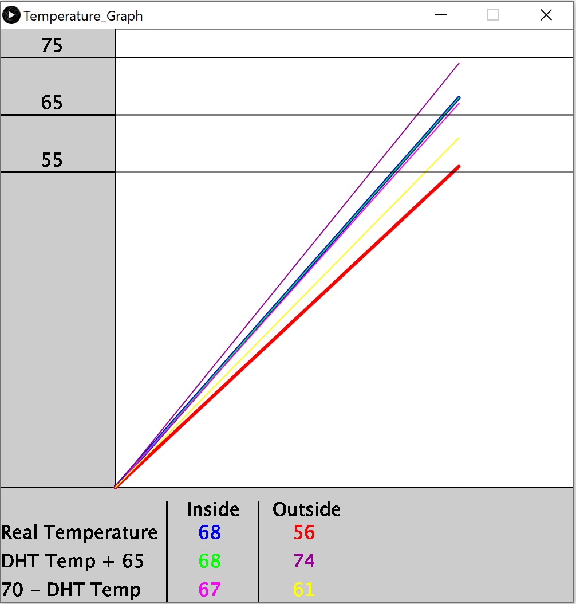

Performance Prototype Project
For my groups project we are making a prototype that changes what it does based on a temperature sensor using a fan and a screen. Each of us are doing different ideas, for mine I am making a kinetic propeller with a second propeller attached to the one the fan motor spins. The second propeller has a LED on one side and battery on the other, with the main propeller having a counterweight on the other side. The propellers will spin faster or slower depending on the temperature or humidity and make a cool pattern with how the second propeller spins the LED. The screen will display the temperature and humidity as well as what speed the fan is at.
Unfortunately due to damaged or faulty hardware my original idea wasn't feasible, so instead I made a graph of plotted points of different readings using the temperature sensor. The previous attempt at a kinetic propeller is more my prototype now. Also unfortunately it appears as if the temperature sensor doesn't measure ambient temperature only a difference in temperature, which is difficult to measure without it hooked up to a battery of which all my portable batteries powered off after 10 seconds. Additionally it seems to be giving some temperature coefficient to add or subtract from or maybe Kelvin, it gave a really small number like 4 degrees so I had to improvise and guess what I needed to add or subtract to it to make it the right temperature. Using a working thermometer I was able to make some guesses as to what the numbers I should add or subtract to it. The graph I made shows all the points of my data.
Temperature/Humidity Sensor Test Video
Fan Test Video
OLED Display Test Video
Project in Enclosure


OLED Displaying Temperature and Humidity
Kinetic Two Propeller Fan With LED Spinning
Temperature Graph
Additionally, here is the link to my Arduino and Processing code for the project:
Arduino Code Processing Code